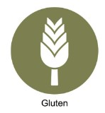
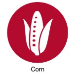
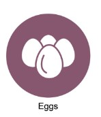
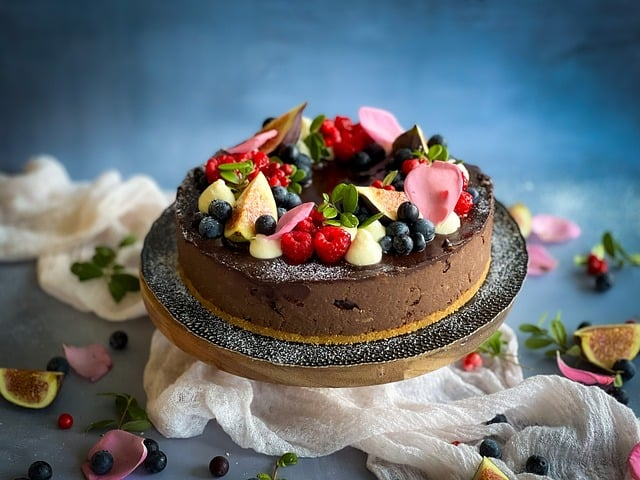
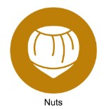

Spagečiai Carbonara

Ingredientai:
- 200g spagečių
- 100g pancetta
- 2 dideli kiaušiniai
- 50g pecorino sūrio
- 50g parmezano
- Juodieji pipirai
- Druska
Alergenai:


Instrukcijos:
- Virkite spagečius pasūdytame vandenyje.
- Kepkite pancetta, kol taps traški.
- Sumaišykite kiaušinius su sūriais.
- Nusausinkite spagečius ir sumaišykite su pancetta ir kiaušinių mišiniu.
- Pagardinkite juodaisiais pipirais ir patiekite.
Atgal i Turini
Vištienos Karis

Ingredientai:
- 500g vištienos krūtinėlės
- 2 svogūnai
- 3 česnako skiltelės
- 1 valgomasis šaukštas kario miltelių
- 400ml kokosų pieno
- Druska
- Aliejus
Alergenai:

Instrukcijos:
- Supjaustykite svogūnus ir česnaką.
- Kepkite svogūnus ir česnaką aliejuje, kol suminkštės.
- Įdėkite vištieną ir kepkite, kol paruduos.
- Įmaišykite kario miltelius ir kepkite 2 minutes.
- Įpilkite kokosų pieno ir troškinkite 20 minučių.
- Pagardinkite druska ir patiekite.
Atgal i Turini
Šokoladinis Pyragas

Ingredientai:
- 200g miltų
- 200g cukraus
- 200g sviesto
- 4 kiaušiniai
- 50g kakavos miltelių
- 1 arbatinis šaukštelis kepimo miltelių
- Žiupsnelis druskos
Alergenai:

Instrukcijos:
- Įkaitinkite orkaitę iki 180°C.
- Sumaišykite sviestą ir cukrų.
- Įmuškite kiaušinius po vieną.
- Persijokite miltus, kakavos miltelius ir kepimo miltelius.
- Maišykite, kol tešla taps vientisa, ir supilkite į kepimo formą.
- Kepkite 25-30 minutes.
- Leiskite atvėsti prieš patiekiant.
Atgal i Turini